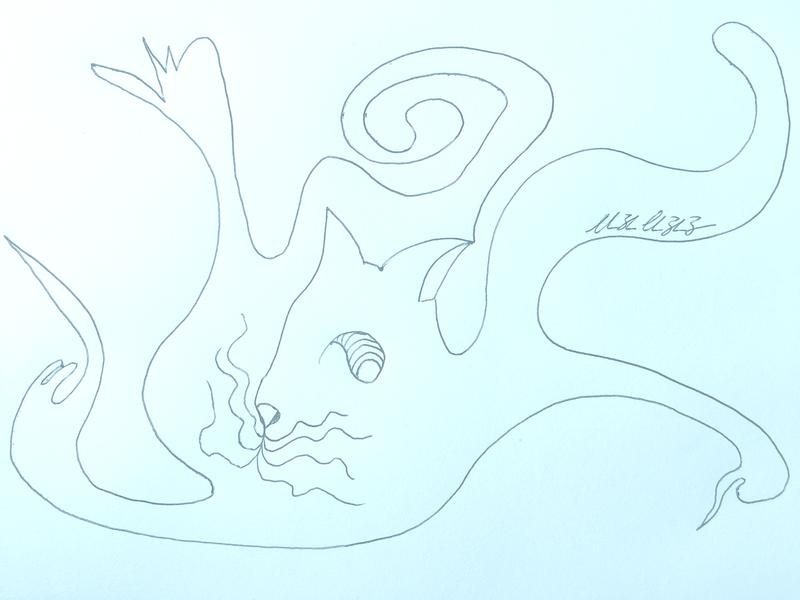
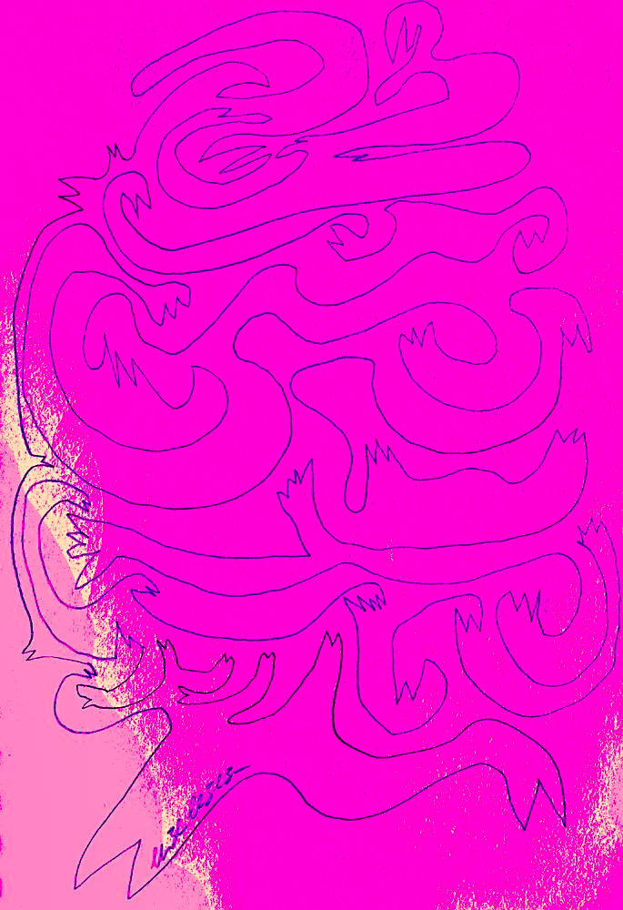
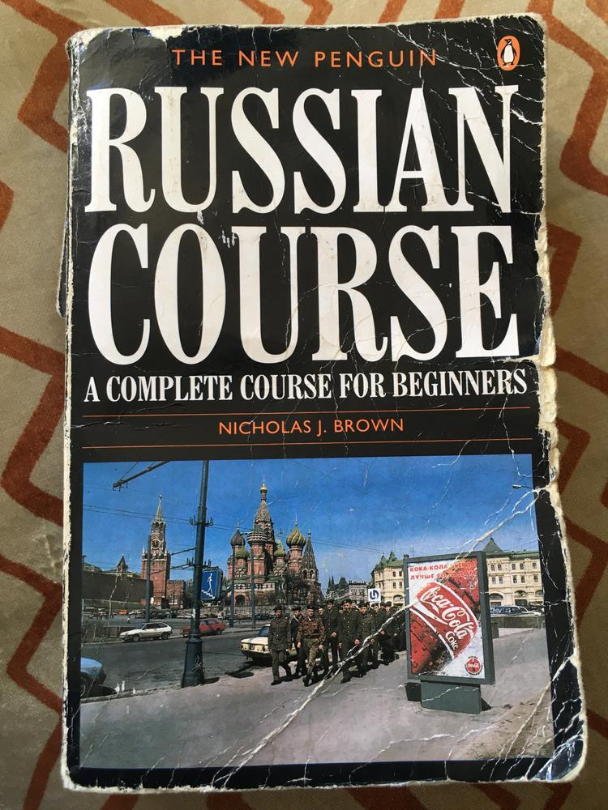

Зверь

What is there to do in Duisburg? To start with, perhaps a saunter around the world's largest inland harbour? Restaurants hug its banks, keen for a view of the concrete basin. Further to the city centre, kebab stalls line the pathways. There's even a theater where the latest misguided, desperate and lost troupe find themselves performing to the vestiges of a decaying post-industrial city.
My mother opts to take me and my brother to the library, undoubtedly due to the lack of internet access in our newly rented accommodation. As the weeks tick by, we are still waiting for a professional to rock up with a router, plug it into the tangle of the Internet and chant a few choice incantations to bless our bare abode with megabits and millisecond pings. My mother's unable to wait for the famed efficiency of Teutonic bureaucracy: she has electronic mail to read.
Scowering past the rows of shelves brimming with Goethe, Mann, Schiller and odd spines with spiky Fraktur characters, I search for reading more suited to my ability. My pathetic attempt a few days ago to ask where swimwear and goggles could be bought at our new local swimming pool, blatantly demonstrated that three years of German lessons in England had not amounted to much.
I spy some teenage fiction I've read before. Alex Rider, perfect! Knowing the characters, premise and plot should make reading in a new language a less foreboding task. Alas, the first few words of German already muddle my mind. But then, I finally stumble upon the jackpot.
Garfield.
Full of indispensable vocabulary, such as "Pastaspäher", "Lasagne" and "Nein", Garfield quickly equips me with the essentials needed to navigate these new environs.

I'm free this weekend. Typing Events in Sydney into my web browser reveals a
Japanese film festival at the Art Gallery of New South Wales. Skimming through
the blurbs, the phrase "experimental horror" pops out. I know exactly who
will join me for this.
House is a fusillade on the brain cells and a smorgasbord of filmic delights… Described as ‘unhinged extreme’, House (aka Hausu) is an experimental horror film that amalgamates 1970s pop culture with mysterious phenomenology.
We arrive, settle in, and a white cat appears.

Packing for a weekend is an art I have perfected. My backpack fits a rolled-up shirt, a couple of changes of underwear, a book, an apple or two and a water bottle. My jacket, coat, sweater and trousers can easily last a weekend, even with long-haul bus trips. A toothbrush and perhaps a perfume bottle can be stowed away into one of the side pockets; everything else can be borrowed when I reach my destination. Oslo, Copenhagen, London, Amsterdam, Berlin, Geneva, Madrid, each weekend there's another friend to visit, another festival to attend, another chance to snatch a moment together with my partner, to remove the telephone which separates our voices, to feel her breath on my skin, to violate the definition of "long-distance relationship" for a few glorious days.
Packing for life with my partner on a new continent has me stumped. What parts of myself do I want to keep? Which clothes, hobbies, memories, dreams, affections will match our new surroundings?
We've already decided on bringing a musical instrument each, which leaves one suitcase and one piece of hand luggage. Crockery, cutlery, clothes will be easy to find in charity shops once we're in Sydney. Books too, and if not then surely at a library. As I stack my books onto bookshelves and unpack and pack them from storage boxes, I pick up a battered textbook, The New Penguin Russian Course. The receipt remains inside, the date marks the length of time I have failed to realise a naïve teenage dream to learn Russian. A certain stubbornness washes over me and I resolve to finish what I started eight years ago. I place the book in my carry-on pile.
Two flights later, and many more reading hours, I reach the end of Nicholas Brown's text. What's next? I'm not sure if Garfield has been translated into Russian, but surely the Harry Potters have. Indeed, I spot a couple of the later books at Abbey's Bookshop, but there's no Philosopher's Stone… I order a copy at the counter and pick up New Penguin Parallel Text Short Stories in Russian to tide me over.
As I leaf through, a дедушка consoles me, before arms reach out from the pages and grasp onto me, arms of widows selling the remains of their war-hero husbands, an arm tattooed on the sea, the still shaking arms of a priest executioner.
Once in, I see him. He is waiting for me as if it were time to introduce himself. He is sitting in the armchair - a huge, confident cat - with his chubby cheeks turned toward me.